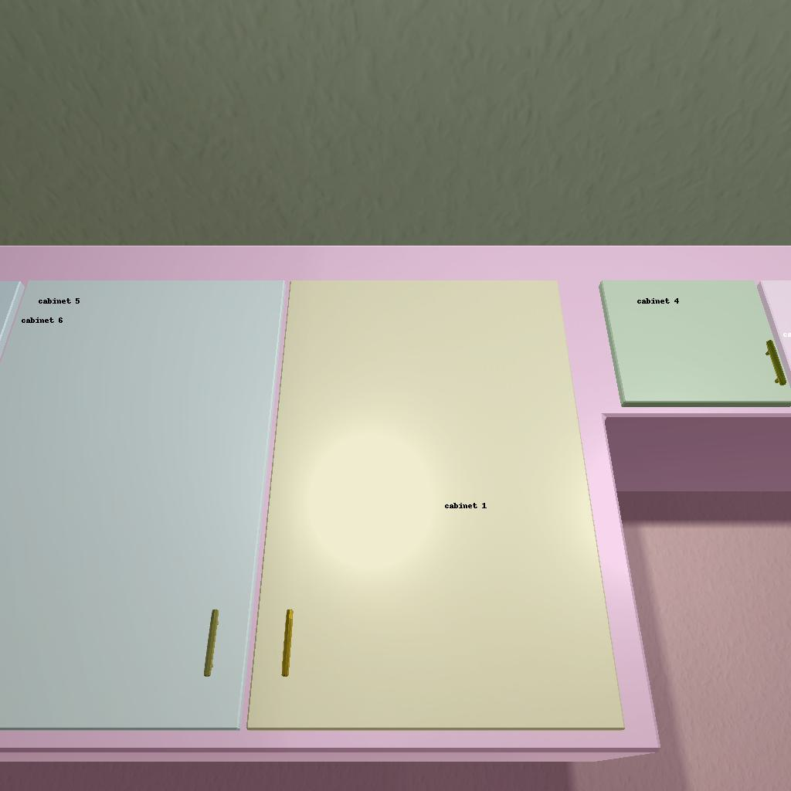
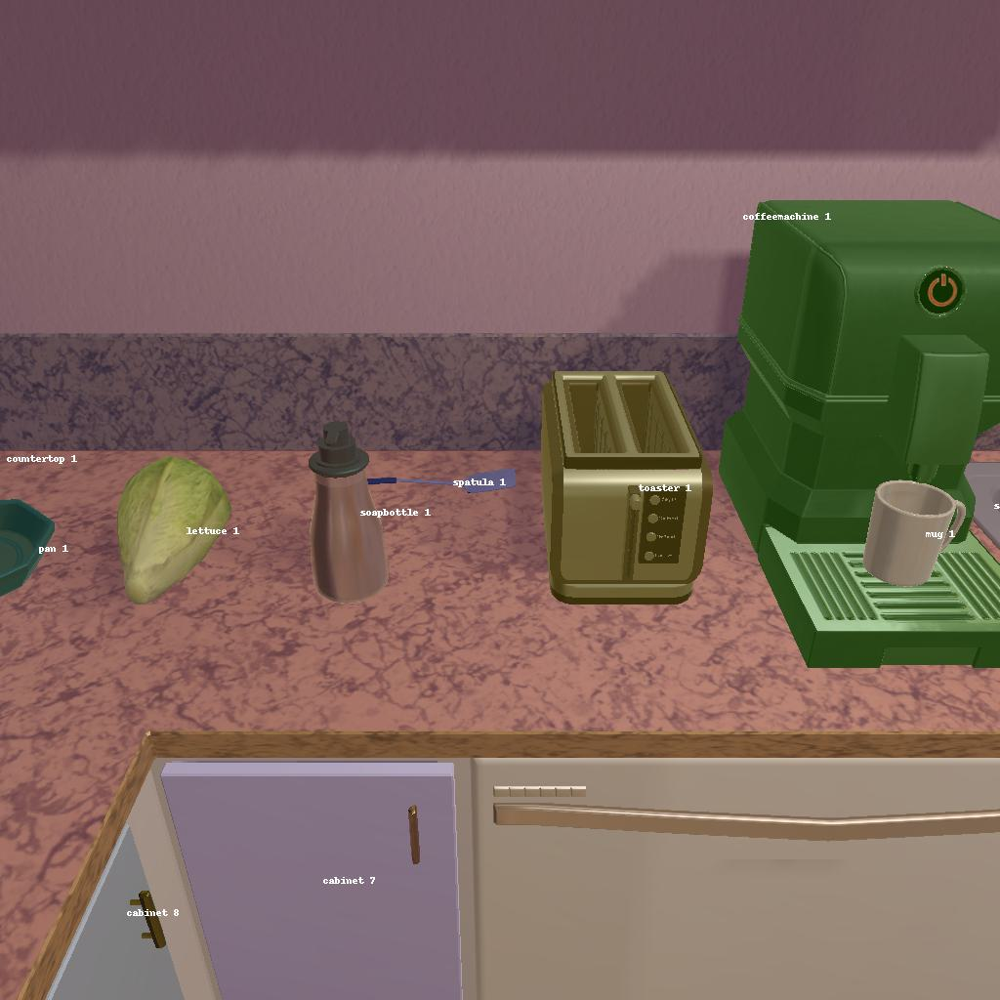

---------------------------------------------------------task: 18---------------------------------------------------------
--------------------------------------------------------------------------------------------------------------------------------------------------------------------
--------------------------------------------------------------------------------------------------------------------------------------------------------------------
Step:--------------------------------------------------------------------------5-------------------------------------------------------------------------------
----------------------------------------
VLM Prompt:
Image1:
Image2:
Image3:
**Instruction**
1. Analyze the provided image to identify all visible household objects, focusing on those relevant to the task description "put a cool pot in cabinet."
2. Use the analysis of the image and the task hint "The agent must find an object of the desired type, pick it up, go to a fridge, cool the object with the fridge, then find the correct location to place it, and put it down there. The agent does not need to use the fridge button or open the fridge to cool the object, and the agent just needs to do action that is "cool the object with the fridge"." to answer the question: what is the most reasonable action in the choices for the task description "put a cool pot in cabinet"?
4. Decide and write the answer using the template: The answer is: (i): , where i is the real number. If there is no desired object in the image, search every place based on **Initial Observation** to find the object. And if no one is exactly correct, choose a similar answer.
**Initial Observation**
You are in the middle of a room. Looking quickly around you, you can see cabinet (1-20), countertop (1-3), coffeemachine (1), toaster (1), sink (1), fridge (1), microwave (1), garbagecan (1), drawer (1-3), sinkbasin (1), stoveburner (1-4), shelf (1-3)
**Answer Choices**
(1): go to cabinet 1
(2): go to cabinet 2
(3): go to cabinet 3
(4): go to cabinet 4
(5): go to cabinet 5
(6): go to cabinet 6
(7): go to countertop 1
(8): go to coffeemachine 1
(9): go to toaster 1
(10): go to cabinet 8
(11): go to sink 1
(12): go to microwave 1
(13): go to garbagecan 1
(14): go to cabinet 9
(15): go to cabinet 10
(16): go to countertop 2
(17): go to cabinet 11
(18): go to cabinet 12
(19): go to drawer 1
(20): go to countertop 3
(21): go to drawer 2
(22): go to cabinet 13
(23): go to sinkbasin 1
(24): go to cabinet 14
(25): go to drawer 3
(26): go to stoveburner 1
(27): go to stoveburner 2
(28): go to stoveburner 3
(29): go to cabinet 15
(30): go to stoveburner 4
(31): go to cabinet 16
(32): go to cabinet 17
(33): go to cabinet 18
(34): go to cabinet 19
(35): go to cabinet 20
(36): go to shelf 1
(37): go to shelf 2
(38): go to shelf 3
(39): open cabinet 7
(40): close cabinet 7
(41): examine cabinet 7
**Answer**
Let's think step by step by following the instructions.
----------------------------------------
----------------------------------------
Original Response:
First, we need to identify a pot. Looking at the images, we see a pot on countertop 1 in Image3.
Next, according to the task description, we need to cool the pot with the fridge, but we don't need to use the fridge button or open the fridge to do so. Since we know the location of the fridge from Image2 and the pot from Image3, the next reasonable action would be to take the pot to the fridge to cool it. However, this action is not listed in the answer choices, so we will assume that the agent has already cooled the pot and is ready to put it in a cabinet.
Finally, we need to find a cabinet to put the cooled pot in. The task description does not specify which cabinet to use, so we can choose any of the visible cabinets from the images. Image1 shows cabinets 1, 4, 5, and 6; Image3 shows cabinet 7.
The most reasonable action from the given choices, after cooling the pot, would be to put it in one of the visible cabinets. Cabinet 7 is open in Image3, which makes it a convenient choice as no further action is required to open it.
The answer is: (39): open cabinet 7.
----------------------------------------
----------------------------------------
>>> Refine Original VLM Response and Get Pure Action: open cabinet 7
----------------------------------------
-----------------------------------------------------------------
Running time: 10.006571531295776 seconds
Total Money: 11.32417
-----------------------------------------------------------------
-----------------------------------------------------------------
Text Observation:You open the cabinet 7. The cabinet 7 is open. In it, you see a lettuce 1, a soapbottle 1, a mug 1, a pan 1, and a spatula 1.
-----------------------------------------------------------------
UNSUCCEED